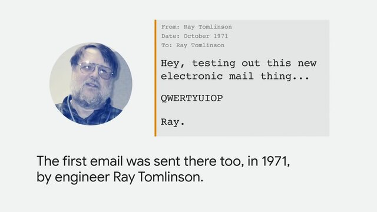

Historia de Internet - Línea del Tiempo
Desde ARPA hasta la era de la nube

Eventos Relacionados
| 1969 - ARPANET | 1973 - TCP/IP | 1984 - DNS | 1995 - Internet Comercial |
1971 – Primer Correo ElectrónicoEn 1971, un programador llamado Ray Tomlinson, que trabajaba para la empresa BBN Technologies (la misma que desarrolló ARPANET), realizó un experimento que cambiaría para siempre la forma en que nos comunicamos. Tomlinson estaba trabajando en un programa llamado SNDMSG, que permitía a los usuarios dejar mensajes en las computadoras de otros usuarios en la misma máquina. Sin embargo, Tomlinson tuvo una idea revolucionaria: ¿por qué no permitir que estos mensajes viajaran entre diferentes computadoras a través de ARPANET? Combinó SNDMSG con otro programa experimental llamado CPYNET, que permitía transferir archivos entre computadoras en red. El resultado fue el primer sistema de correo electrónico en red del mundo. El aporte más duradero de Tomlinson fue la introducción del símbolo "@" (arroba) en las direcciones de correo electrónico. Necesitaba una forma de separar el nombre del usuario del nombre de la computadora donde estaba ubicada su cuenta. Buscó un símbolo en el teclado que no fuera comúnmente usado en nombres y que tuviera un significado lógico. El símbolo "@" (que en inglés se lee "at", significando "en") era perfecto: usuario@computadora indicaba que el usuario estaba "en" esa computadora específica. El primer correo electrónico de Tomlinson fue enviado entre dos computadoras que estaban una al lado de la otra en su laboratorio, aunque conectadas a través de ARPANET. Años después, Tomlinson admitió que no recordaba exactamente qué decía ese primer mensaje, pero que probablemente fue algo insignificante como "QWERTYUIOP" o una prueba similar. A pesar de su modestia, este momento marcó el inicio de una de las formas de comunicación más utilizadas en el mundo moderno. Hoy en día, se envían más de 300 mil millones de correos electrónicos diariamente.  🔗 Fuente: computerhistory.org/networking-the-web |